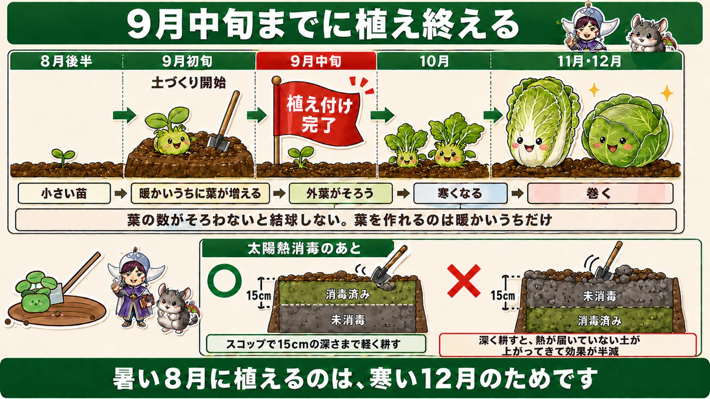
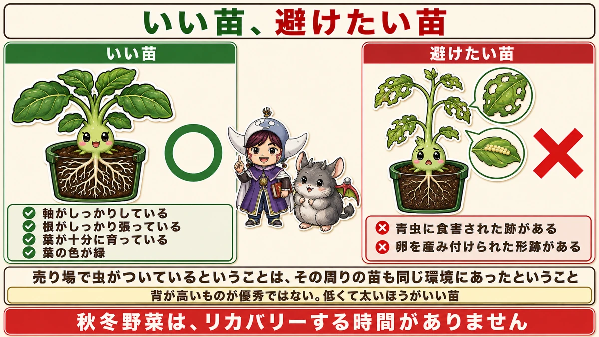
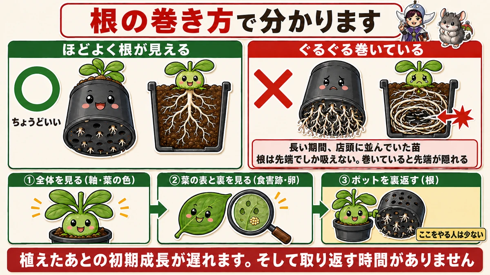
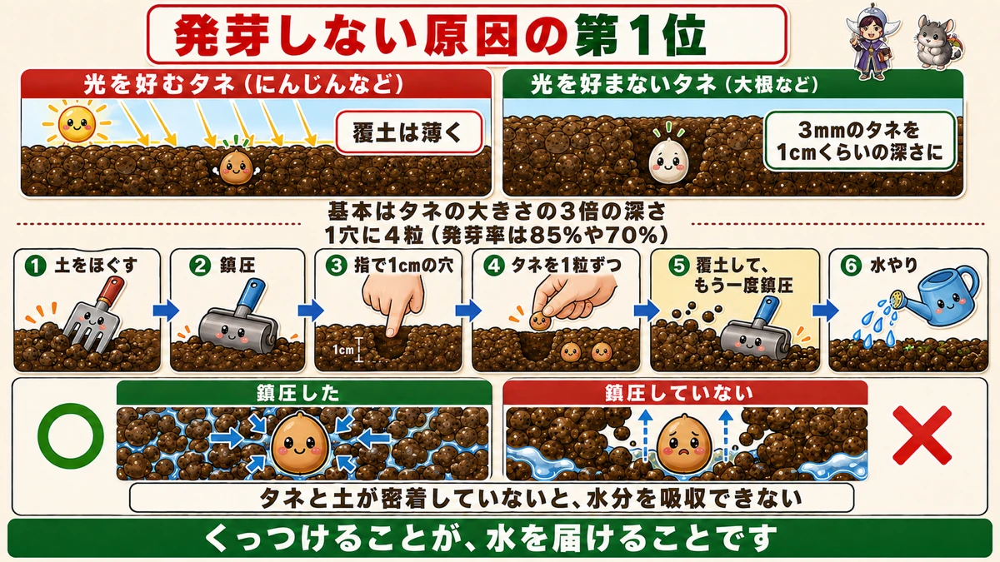

ポットを裏返してください🌱 根の巻き方で、いい苗が分かります

🌱「苗って、どれも同じに見える」
🌱「タネをまいたのに、芽が出なかった」
🌱「秋冬野菜、いつから始めればいいの？」
どうも、8150（えいこう）です🌱 家庭菜園歴8年、理科の教員免許を持っていて、有機・無農薬で野菜を育てています。
8月の後半から、秋冬野菜が本格的に始まります。
そして★秋冬野菜には、夏野菜にはない特徴があります。
先に、この記事でいちばん言いたいことを言っておきます。
★苗を買うときは、ポットを裏返してください。
★根の巻き方で、いい苗かどうかが分かります☺️
★秋冬野菜は、期間が短い
日程が決まっています
まず、全体の日程からお話しします。
★9月初旬 … 土づくりを開始
★★9月中旬までに … 植え付けを終える
★11月から12月 … 収穫

★なぜ9月中旬が期限なのか
理由がはっきりしています。
★キャベツなど結球する野菜は、葉の数が十分にそろわないと結球しません。
前に白菜のところでもお話ししましたが、★巻くためには、まず外葉が必要です。
そして★葉を作れるのは、暖かいうちだけです。
★10月に植えたのでは、寒くなるまでに葉がそろいません。だから9月中旬が期限になります。
前回の話と、つながります
前にお盆の記事で、こうお伝えしました。
★暑い8月に植えるのは、寒い12月のため。
★その具体的な日程が、これです。9月初旬に土、9月中旬までに苗。
★太陽熱消毒をした畑は、15cmまで
前回、太陽熱消毒の話をしました。
消毒が終わった土は、★水分が蒸発して硬くなっています。ほぐす必要があります。
そのとき★15cmくらいの深さまでにしてください。
理由は前にお伝えしたとおりです。★深く耕すと、熱が届いていない下の土を表面に出してしまい、効果が半減します。
★「浅く耕す」の具体的な数字が、15cmです。
★★苗選びで、9割決まります
なぜ苗選びが重要なのか
夏野菜なら、多少弱い苗でも時間があります。植えてから収穫まで、3か月も4か月もある。★途中で持ち直せます。
★秋冬野菜は違います。
- ★植え付けまでの期間が短い
- ★そこから寒くなるまでも短い
- ★リカバリーする時間がない
★とくに初心者の方は、悪い苗を植えてしまうと立て直しが難しいです。
★避けたほうがいい苗
まず、外すべきものからお話しします。

★1. 青虫に食害された跡がある
葉に穴が開いている、かじられている。★もう虫がついていた苗です。
★2. 卵を産み付けられた形跡がある
葉の裏に、小さな粒が並んでいる。★これを畑に持ち込むことになります。
★売り場で虫がついているということは、その周りの苗も同じ環境にあったということです。
★いい苗の4条件
逆に、選ぶべき条件です。
- ★軸がしっかりしている
- ★根がしっかり張っている
- ★葉が十分に育っている
- ★葉の色が緑
前に育苗の記事で、「★背が高いものが優秀ではない。低くて太いほうがいい苗」とお伝えしました。★売っている苗を選ぶときも、まったく同じ基準です。
★★ポットを、裏返してください
ここがいちばんの見どころです
そして、多くの方が見落としているのがこれです。
★ポットの裏から、根の巻き方を確認してください。

底の穴から、根が見えます。
- ★根がほどよく見えている → 良い苗
- ★根がぐるぐる巻いて、びっしり詰まっている → ★避けたい苗
★根が巻いている、ということの意味
なぜ根の巻きすぎがだめなのか。
★それは「長い期間、店頭に並んでいた」ということだからです。
苗床からポットに移されて、そのまま売れずに何週間も置かれていた。★その間、根はポットの中で行き場を失って、ぐるぐる回り続けていました。
★初期成長に、影響します
前に定植の記事で、こうお伝えしました。
★根は先端でしか吸えない。★巻いていると、吸う先端が内側に隠れてしまう。
だから★植えたあとの初期成長が遅れます。
そして秋冬野菜には、★その遅れを取り返す時間がありません。
見る順番
売り場での見方を、順番にすると。
★1. 全体を見る（軸が太いか、葉の色は緑か）
★2. 葉の表と裏を見る（食害跡、卵）
★3. ★ポットを裏返す（根の巻き方）
★3つ目を必ずやってください。1と2は多くの方がやりますが、3をやる方は少ないです。
★★タネをまく
大根を例にお話しします
苗ではなく、タネから育てるものもあります。大根、かぶ、ほうれん草、小松菜。
★秋冬野菜は、直まきするものが多いです。

★1穴に4粒まきます
まず、粒の数です。
★タネ袋の発芽率は、85%や70%と書いてあります。
前にタネ袋の記事でお伝えしたとおり、★100%ではありません。10粒まいたら2〜3粒は出ない。
だから★1つの穴に1粒では、心配です。
★1穴に4粒。これくらいまいておけば、どれかは出ます。
★★光を好むタネと、好まないタネ
深さの話です。ここに大事な原則があります。
★基本は、タネの大きさの3倍くらいの深さに埋めます。
でも、それだけではありません。
★★タネには、光を好むものと、好まないものがあります。
- ★光を好むタネ … 浅く埋める（光が届かないと発芽しない）
- ★光を好まないタネ … 少し深めに埋める
大根は、光を好みません
具体例です。
★大根は、光を好まないタネです。だから少し深めに埋めます。
★3mmくらいのタネを、1cmくらいの深さに。
前に春の葉物の記事で、「★にんじんは光を好むので覆土を薄く」とお伝えしました。★大根はその裏返しです。
★同じ根菜でも、逆になる。だからタネ袋を読む価値があります。
★★発芽しない、最大の原因
手順は6つ
まず、正しい手順を並べます。
★1. 土を十分にほぐす
★2. ★鎮圧する
★3. 指で1cmくらいの穴を開ける
★4. タネを1粒ずつ落とす（1穴4粒）
★5. 土をかぶせて、★もう一度、手のひらで鎮圧する
★6. 水やり
★鎮圧が、2回出てきます
気づかれたでしょうか。★鎮圧が2回あります。
- まく前に、1回
- ★覆土したあとに、もう1回
★2回目を飛ばす方が、とても多いです。
★★発芽しない原因の第1位は、鎮圧不足
はっきり言われています。
★発芽しない場合のいちばん大きな原因は、鎮圧不足です。
理由は単純です。
★タネと土が密着していないと、タネは土から水分を吸収できません。
ふわっと土をかけただけだと、★タネのまわりに空気の層ができます。そこには水が来ません。
★水をやっているのに、タネには届いていない。これが「まいたのに出ない」の正体です。
何度も出てきた話です
このブログで、鎮圧の話は何度も出てきました。
- ★春大根 … 覆土したら鎮圧。発芽が揃う
- ★にんじん … 薄く覆って、しっかり鎮圧
- ★定植 … 土を寄せて密着させる
★全部、同じことを言っています。
★くっつけることが、水を届けることです。
8月後半にやること
この記事の要点
- ★9月初旬に土づくり、★9月中旬までに植え付けを終える
- ★キャベツなど結球する野菜は、葉の数がそろわないと結球しない
- ★葉を作れるのは暖かいうちだけ。だから9月中旬が期限
- ★太陽熱消毒のあとは15cmまで。★深く耕すと熱が届いていない土が上がってきて効果が半減
- ★★秋冬野菜は苗選びで9割決まる。★リカバリーする時間がない
- 避ける苗＝★青虫の食害跡がある／★卵を産み付けられた形跡がある
- いい苗＝★軸がしっかり／根が張っている／葉が十分／葉の色が緑
- ★★ポットを裏返して、根の巻き方を見る
- ★根が巻いている＝長い期間、店頭に並んでいた苗
- ★根は先端でしか吸えない。★巻いていると先端が内側に隠れ、初期成長が遅れる
- 見る順番は★①全体 ②葉の表と裏 ★③ポットの裏
- ★発芽率は85%や70%。★1穴に4粒まく
- ★タネの大きさの3倍の深さが基本
- ★★光を好むタネと、好まないタネがある
- ★大根は光を好まないので少し深め（3mmのタネを1cm）
- ★にんじんは光を好むので浅く。★同じ根菜でも逆になる
- 手順は★①ほぐす ★②鎮圧 ③穴 ④タネ ⑤覆土して★もう一度鎮圧 ⑥水やり
- ★★発芽しない最大の原因は、鎮圧不足
- ★タネと土が密着していないと、水分を吸収できない
- ★くっつけることが、水を届けること
全部やろうとしなくて大丈夫です。まずは次にお店へ行ったとき、★ポットを1つ裏返してみてください。根がどうなっているか、見るだけで構いません🌱
次回は、秋の虫の話。結球しはじめてからが本番です🐛
ここまで読んでくださって、ありがとうございました。
セルトレー128穴
秋冬野菜は畑に直まきせず、涼しい場所で育ててから植えるほうが確実です。
![[商品価格に関しましては、リンクが作成された時点と現時点で情報が変更されている場合がございます。]](https://hbb.afl.rakuten.co.jp/hgb/55e75fe5.20db4cd1.55e75fe7.d1ec32cc/?me_id=1194164&item_id=10000832&pc=https%3A%2F%2Fthumbnail.image.rakuten.co.jp%2F%400_mall%2Fgardening%2Fcabinet%2Fikubyoukesoku%2Fimg10431256665.jpg%3F_ex%3D240x240&s=240x240&t=picttext "[商品価格に関しましては、リンクが作成された時点と現時点で情報が変更されている場合がございます。]")

たねまき培土
畑の土でまくと、発芽のところで失敗します。育苗はタネまき用の土で。
![[商品価格に関しましては、リンクが作成された時点と現時点で情報が変更されている場合がございます。]](https://hbb.afl.rakuten.co.jp/hgb/55e75fe5.20db4cd1.55e75fe7.d1ec32cc/?me_id=1194164&item_id=10000034&pc=https%3A%2F%2Fthumbnail.image.rakuten.co.jp%2F%400_mall%2Fgardening%2Fcabinet%2Fyoudosenyoudo%2Fimg57203270.jpg%3F_ex%3D240x240&s=240x240&t=picttext "[商品価格に関しましては、リンクが作成された時点と現時点で情報が変更されている場合がございます。]")
日よけ・遮光ネット
夏の育苗は、温めるためではなく冷やすためにやります。春とは目的が逆です。
![[商品価格に関しましては、リンクが作成された時点と現時点で情報が変更されている場合がございます。]](https://hbb.afl.rakuten.co.jp/hgb/565b708e.e3f248ff.565b708f.4c3ea46d/?me_id=1194418&item_id=10631677&pc=https%3A%2F%2Fthumbnail.image.rakuten.co.jp%2F%400_mall%2Fminatodenk%2Fcabinet%2Ffs%2F0109%2Ffs-0117352.jpg%3F_ex%3D240x240&s=240x240&t=picttext "[商品価格に関しましては、リンクが作成された時点と現時点で情報が変更されている場合がございます。]")
じょうろ（ハス口）
タネをまいたあとは、鎮圧してから静かに水を。勢いよく出ると種が浮きます。

あわせて読みたい